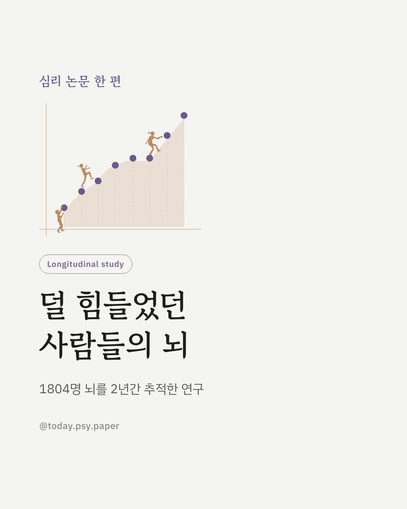
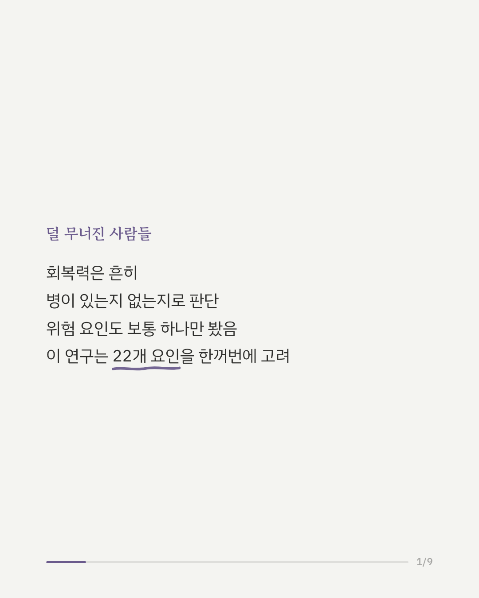
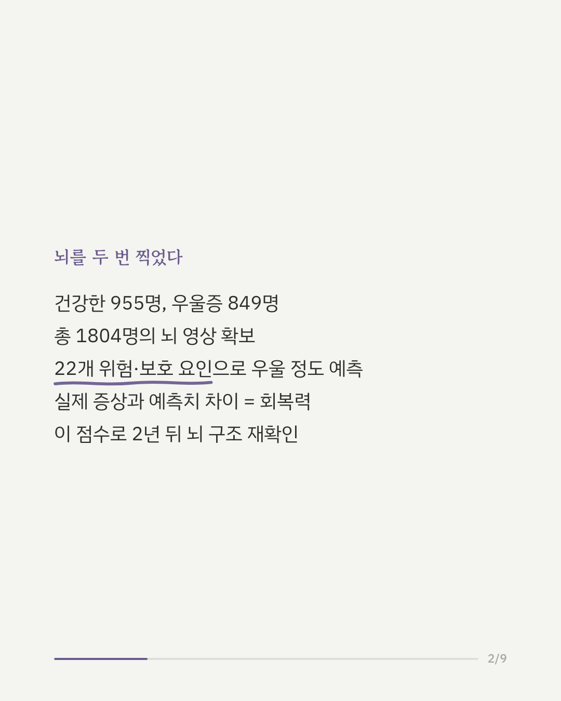
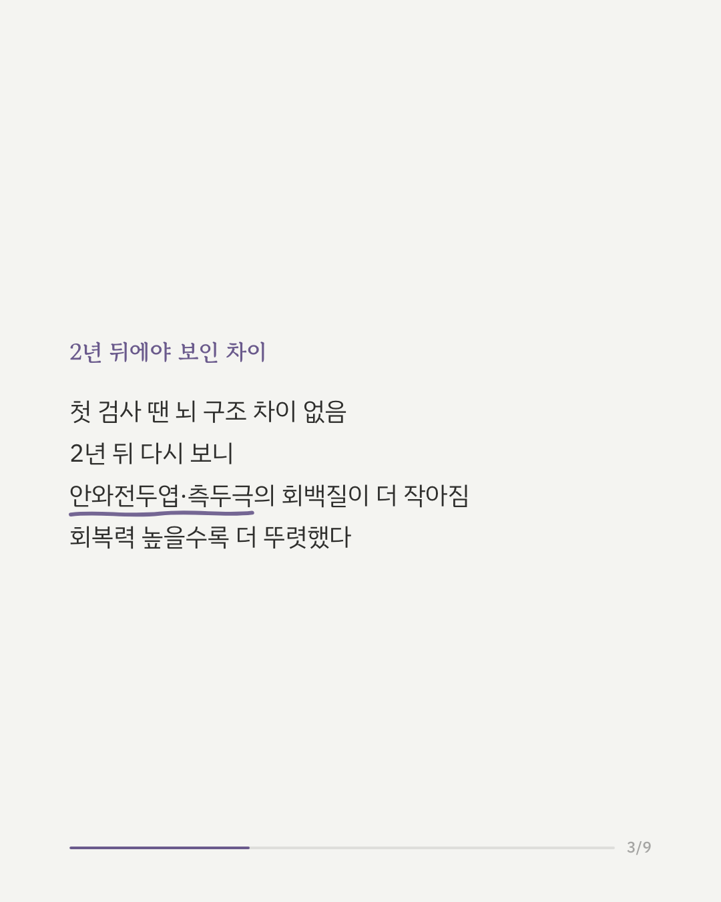
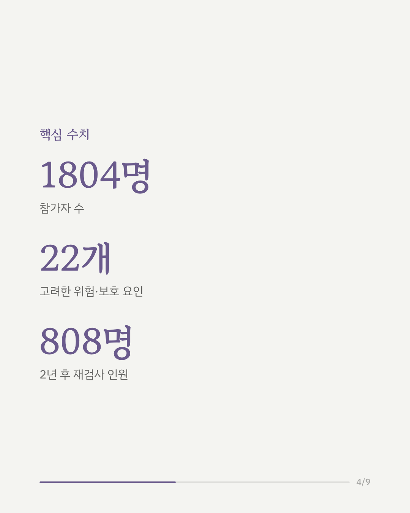
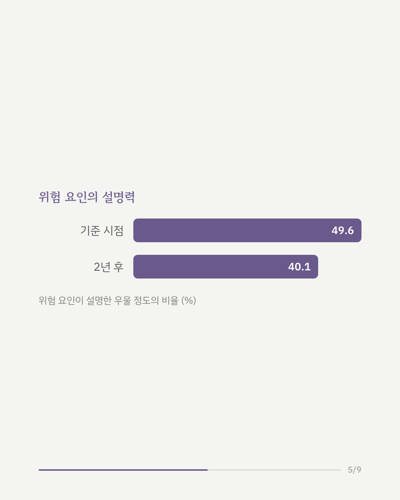
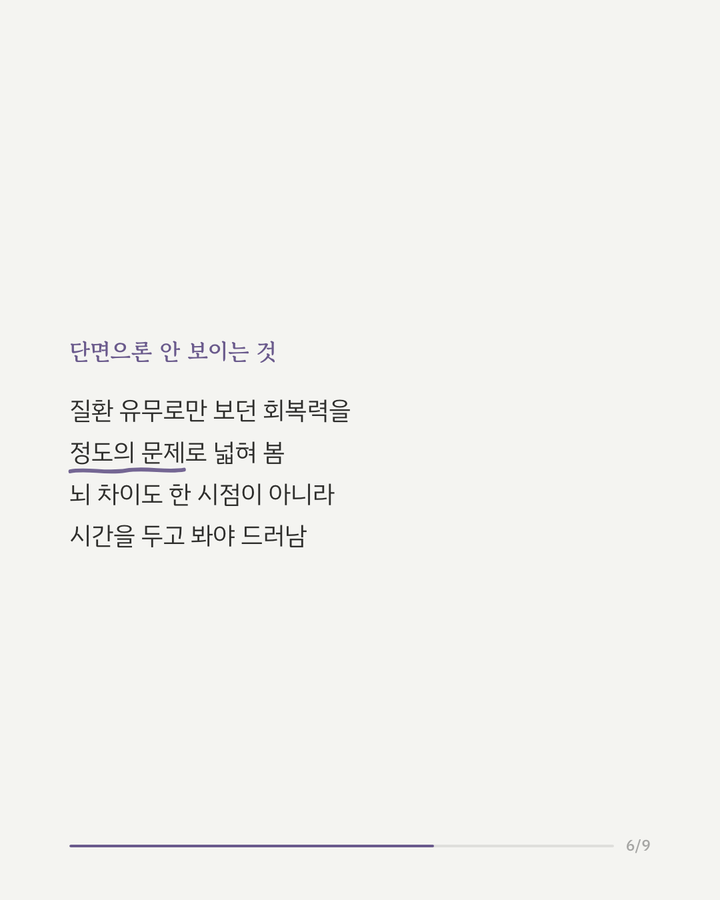
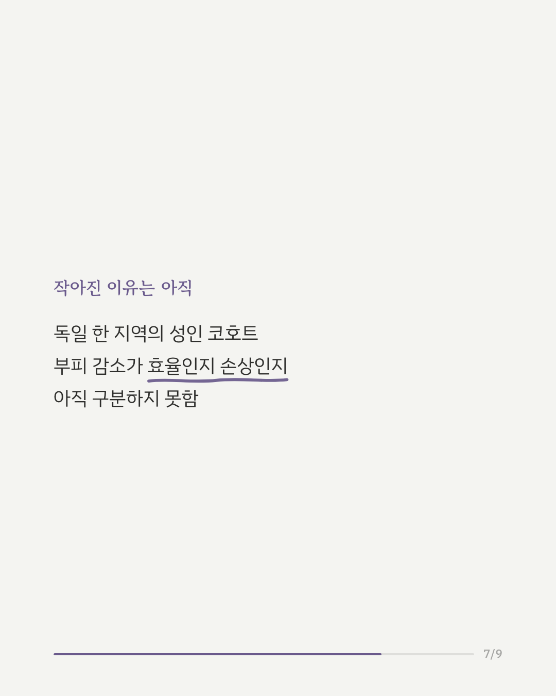
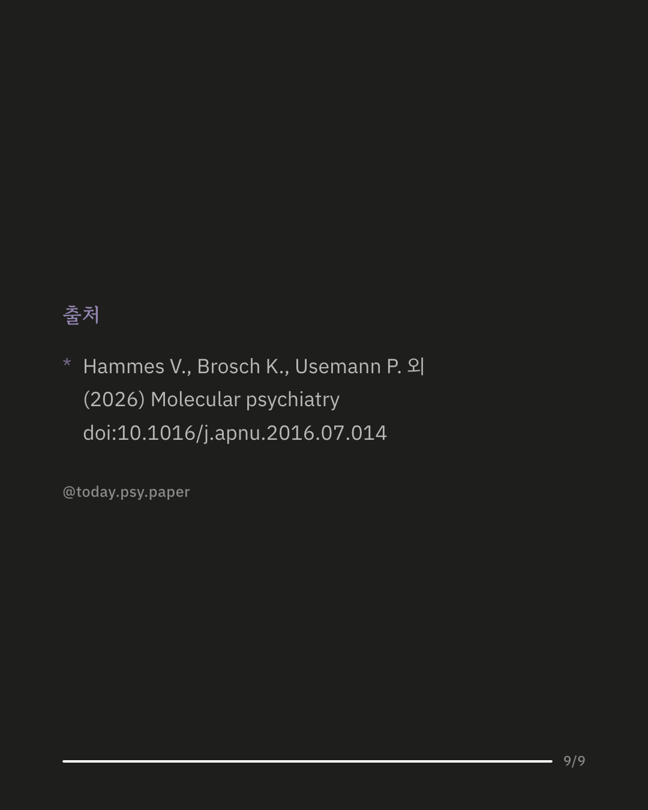

우울증을 겪어도 유난히 덜 힘들어하는 사람들이 있습니다. 이 연구는 이런 회복력을 '병이 있다/없다'가 아니라, 위험 요인에 비해 우울 정도가 얼마나 덜한지의 '정도'로 다시 정의했습니다. 건강한 사람 955명과 우울증을 겪은 849명, 총 1804명을 대상으로 22개의 위험·보호 요인을 종합해 우울 정도를 예측하고, 실제 증상과의 차이를 회복력 점수로 삼았습니다. 이 점수로 2년에 걸쳐 뇌 구조 변화를 추적했습니다. 첫 검사 시점에는 회복력과 뇌 구조 사이에 뚜렷한 관련이 없었습니다. 하지만 2년 뒤 다시 보니, 회복력이 높았던 사람일수록 안와전두엽과 측두극의 회백질 부피가 더 작아져 있었습니다. 연구진은 이것이 뇌가 더 효율적으로 작동한 결과일 수도, 반대로 시간이 지나며 쌓인 생물학적 부담일 수도 있다고 보았습니다. 참가자가 모두 독일 마르부르크-뮌스터 지역 코호트에 속해 있어, 다른 문화권에서도 같은 결과가 나올지는 아직 알 수 없습니다. 출처: Molecular Psychiatry (2026), 'Resilience beyond diagnosis: prospective neural correlates of better-than-expected outcomes in depression' #임상심리 #정신건강정보 #뇌과학 #우울증연구 #회복탄력성
python3 publish.py 42778581